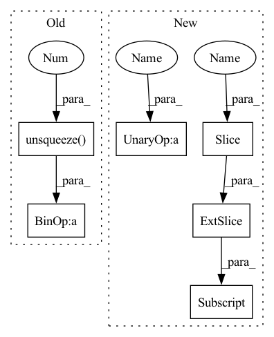

Pattern ID :11951

Before Change
x = x.unsqueeze(-1)
x = self.project_to_steps(x) // BxCxTxS
x = self.dropout(x)
x = x.unsqueeze(0).expand(targets.size(0), -1, -1, -1, -1)
copies, bsz, dim, tsz, steps = x.shape
steps = min(steps, tsz - self.offset)
predictions = x.new(bsz * copies * (tsz - self.offset + 1) * steps - ((steps + 1) * steps // 2) * copies * bsz)
labels = torch.zeros_like(predictions)
weights = torch.full_like(labels, 1 / self.n_negatives) if self.balanced_classes else None
start = end = 0
for i in range(steps):
offset = i + self.offset
end = start + (tsz - offset) * bsz * copies
pos_num = (end - start) // copies
predictions[start:end] = (x[..., :-offset, i] * targets[..., offset:]).sum(dim=2).flatten()
labels[start:start + pos_num] = 1.
if weights is not None:
weights[start:start + pos_num] = 1.
After Change
else:
pos_num = (end - start) // copies
predictions[start:end] = torch.einsum(
"bct,nbct->nbt", x[..., :-offset, i], targets[..., offset:]
).flatten()
labels[start : start + pos_num] = 1.0
if weights is not None:
weights[start : start + pos_num] = 1.0
In pattern: SUPERPATTERN
Frequency: 3
Non-data size: 6
Instances
Fragment ID: 40514026
Project Name: kssteven418/i-bert
Commit Name: 3335de5f441ee1b3824e16dcd98db620e40beaba
Time: 2020-02-29
Author: alexei.b@gmail.com
File Name: fairseq/models/wav2vec.py
M Class Name: Wav2VecPredictionsModel
N Class Name: Wav2VecPredictionsModel
M Method Name: forward(3)
N Method Name: forward(3)
M Parent Class: nn.Module
N Parent Class: nn.Module
M File Name: fairseq/models/wav2vec.py
N File Name: fairseq/models/wav2vec.py
M Start Line: 411
M End Line: 439
N Start Line: 638
N End Line: 691
'>
Before Change
from relative distances (with length 2*tokens-1) to absolute distance (length tokens)
query_index = torch.arange(tokens).unsqueeze(0) // [1, dim]
key_index = torch.arange(tokens).unsqueeze(1) // [dim, 1]
relative_index = (key_index - query_index) + tokens - 1 // dim X dim (zero indexed)
flatten_index = rearrange(relative_index, "i j->(i j)") // flatten
abs_emb = torch.index_select(q_rel, axis, flatten_index) // [head_planes , (dim*dim)]
return rearrange(abs_emb, "b h t (x y) -> b h t x y", x=tokens)
After Change
flat_x = rearrange(x, "b h l c -> b h (l c)")
flat_pad = torch.zeros((b, h, l - 1), **dd)
flat_x_padded = torch.cat((flat_x, flat_pad), dim=2)
final_x = flat_x_padded.reshape(b, h, l + 1, 2 * l - 1)
final_x = final_x[:, :, :l, (l - 1):]
return final_x
def rel_pos_emb_1d(q, rel_emb, shared_heads):
'>
Fragment ID: 40514024
Project Name: the-ai-summer/self-attention-cv
Commit Name: 400427e8b940a91d0baa90037b7bf2308c8bc9e9
Time: 2021-02-09
Author: black.adaloglou@gmail.com
File Name: self_attention_cv/pos_embeddings/relative_embeddings_1D.py
M Class Name: AnonimousClass
N Class Name: AnonimousClass
M Method Name: relative_to_absolute(1)
N Method Name: relative_to_absolute(3)
M Parent Class:
N Parent Class:
M File Name: self_attention_cv/pos_embeddings/relative_embeddings_1D.py
N File Name: self_attention_cv/pos_embeddings/relative_embeddings_1D.py
M Start Line: 6
M End Line: 17
N Start Line: 11
N End Line: 27
'>
Before Change
x = x.unsqueeze(-1)
x = self.project_to_steps(x) // BxCxTxS
x = self.dropout(x)
x = x.unsqueeze(0).expand(targets.size(0), -1, -1, -1, -1)
copies, bsz, dim, tsz, steps = x.shape
steps = min(steps, tsz - self.offset)
predictions = x.new(bsz * copies * (tsz - self.offset + 1) * steps - ((steps + 1) * steps // 2) * copies * bsz)
labels = torch.zeros_like(predictions)
weights = torch.full_like(labels, 1 / self.n_negatives) if self.balanced_classes else None
start = end = 0
for i in range(steps):
offset = i + self.offset
end = start + (tsz - offset) * bsz * copies
pos_num = (end - start) // copies
predictions[start:end] = (x[..., :-offset, i] * targets[..., offset:]).sum(dim=2).flatten()
labels[start:start + pos_num] = 1.
if weights is not None:
weights[start:start + pos_num] = 1.
After Change
start = end = 0
for i in range(steps):
offset = i + self.offset
end = start + (tsz - offset) * bsz * copies
if self.infonce:
predictions[start:end] = torch.einsum(
"bct,nbct->tbn", x[..., :-offset, i], targets[..., offset:]
).flatten()
else:
pos_num = (end - start) // copies
predictions[start:end] = torch.einsum(
"bct,nbct->nbt", x[..., :-offset, i], targets[..., offset:]
).flatten()
labels[start : start + pos_num] = 1.0
if weights is not None:
weights[start : start + pos_num] = 1.0
'>
Fragment ID: 40514007
Project Name: mohammadkhalifa/fairseq-tagging
Commit Name: 3335de5f441ee1b3824e16dcd98db620e40beaba
Time: 2020-02-29
Author: alexei.b@gmail.com
File Name: fairseq/models/wav2vec.py
M Class Name: Wav2VecPredictionsModel
N Class Name: Wav2VecPredictionsModel
M Method Name: forward(3)
N Method Name: forward(3)
M Parent Class: nn.Module
N Parent Class: nn.Module
M File Name: fairseq/models/wav2vec.py
N File Name: fairseq/models/wav2vec.py
M Start Line: 411
M End Line: 439
N Start Line: 638
N End Line: 691